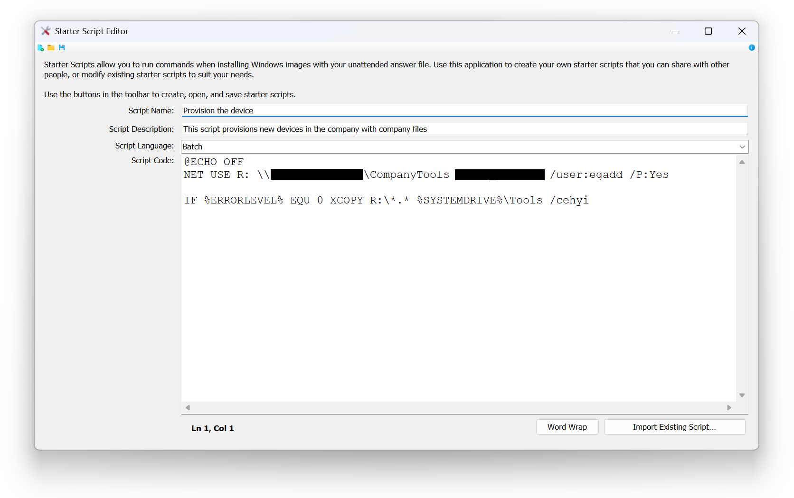

The Starter Script Editor
The Starter Script Editor allows you to make and edit your own starter scripts that you can later use with DISMTools. It can be accessed from one of the following locations:
- By opening the starter script browser from the post-installation scripts section of the unattended answer file creation wizard, and clicking "Create your own starter scripts..."
- Independently, by opening
StarterScriptEditor.exelocated in<program directory>\tools\StarterScriptEditor
You should see the following window:

Usage
When you launch the Starter Script Editor, you will be able to create a new starter script, or open an existing one by clicking "Open" from the toolbar.
To create a new Starter Script you will need to input information regarding the name, the description, the underlying script language, and the script code itself. You can use the following languages in your starter script:
- Batch
- PowerShell
When writing the script code, you can click "Import Existing Script..." to open a script that you may already have and that you want to use as the base for your starter script. Keep in mind, however, that, by using this option, you are replacing existing code in the starter script with the code of the script to import.
Click the Save button and specify a name for the starter script file to save it.
Opening the Starter Script Editor from DISMTools presents an improvement. After working on your starter scripts and closing the editor, DISMTools will reload all starter scripts to pull in the new ones. That means that you can use these the moment you close the Starter Script Editor, as opposed to having to close and reopen DISMTools.
Running on older versions of Windows
DISMTools includes 2 versions of the Starter Script Editor that contain the same feature set but target different frameworks:
- The main version targets .NET 4.8 and works on Windows 7 SP1 and later (except Windows 10 1507/1511). The source code of this version is available on the GitHub repository
-
An alternative version targets .NET 2 and works on operating systems as old as Windows 98 Second Edition. The source code of this version is available as a ZIP file in the repository

Starter Script Editor on Windows 2000
The Starter Script Format
Starter scripts (with the DTSS extension) are stored as simple text files that you can open in any text editor. The format is as follows:
Language: <language>
Name: <name>
Description: <description>
<script code>
Format Version History
| Version | Used by DISMTools versions | Changes |
|---|---|---|
| 1.1 | 0.7.2 Preview 3+ | Added name and description fields to the starter scripts |
| 1.0 | 0.7.1 Preview 2 - 0.7.2 Preview 2 | Initial version |